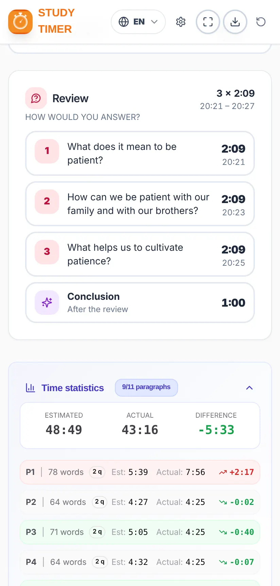

User guide
Study Timer
How to prepare and conduct the Watchtower Study on time
How to prepare and conduct the Watchtower Study on time
Want to start right away? See the 7-step quick guide.
Study Timer helps the brother who conducts the Watchtower Study to divide the time well and finish on time.
You load this week’s article as a PDF and the app:
Unofficial app. It is a free, independent project. It is not an official publication and has no connection with jw.org or with the organization of Jehovah’s Witnesses. The article is analysed on your own device: it is not sent to or stored on any server.
The pictures in this guide use an invented sample article, not a real Watchtower article.
Install it from Google Play: search for “Temporizador de Estudio” or open this link:
play.google.com/store/apps/details?id=com.comangelo.temporizadorestudio
It is not on the App Store yet, but it works just the same from the web and can be added to the home screen:
Open temporizador-estudio.vercel.app in your browser. In Chrome and Edge you can install it as an app from the install icon in the address bar.
Updates: when there is a new version, the app shows the message “A new version of the app is available.” with an Update button. It never updates itself in the middle of a study.

From top to bottom you will find:
The “This week’s article” card shows the current week (for example, November 9-15, 2026) and the issue of The Watchtower that contains it. With the arrows ‹ › you can choose another week.
The Watchtower is downloaded in the language of the app. If the app is in English, the English edition is downloaded; if it is in Spanish, the Spanish edition, and so on for every language. To download another language, first change the language of the app (section 14). In Portuguese, the Portugal or Brazil edition is downloaded, depending on what you chose.
The app keeps a copy of the magazine. The following weeks of the same issue open directly with “Open this week’s article”, without downloading anything again. Saved magazines are deleted automatically 3 months after their last week.
On a computer you can also drag the PDF anywhere onto the home screen (the message “Drop The Watchtower PDF here” appears) or choose the folder where you keep the magazines, and the app will find them by itself.
Does it say the magazine has not been published yet? jw.org publishes each issue a few weeks in advance. If you choose a week far in the future, it may not be available yet.


When the article is loaded you will see:
On the plan card, “Comments: X s per question” tells you the average time available to answer each question.
If the article is too long for the chosen time, a “It does not fit” warning appears with what is missing. You can lengthen the duration or choose a faster reading speed in Settings.

Each paragraph takes one line with its number, its planned time and the approximate time of day at which it should end. The coloured tags point out what to keep in mind:
| Tag | What it means |
|---|---|
| James 5:7, 8 | There is a scripture to be read. The exact reference is shown. |
| Picture | The question refers to a picture in the article (“See also picture”). |
| Note | There is a footnote to discuss. |
| ★ Key point | The question mentions a box or a highlighted idea in quotation marks. |
Tap a paragraph to open it. You will see the words, the reading time, its question and, if it is long, the extra time for more comments. From there:
Paragraphs that share a question (for example, “5, 6.”) are treated as a group, and the Next button skips the whole group.
Recommended: during the study, open presentation mode (section 9). This section explains how things work in general, which is the same in both views.
On a phone, the main buttons are always at the bottom, in the bottom bar:


On the plan card at the top you can pause and resume the study. The message “Must end in m:ss” reminds you how long is left until the end time.
The screen stays on while the study is running, so you don’t have to touch the phone. When you finish, the phone turns the screen off as usual again.
The card of what is in progress (paragraph, introduction, review question or conclusion) changes colour according to the time taken:
| Colour | When | What to do |
|---|---|---|
| ON TIME | Up to the planned time. | All good: keep going. |
| GRACE TIME | It has gone over its time, but by no more than 30%. | Start wrapping up the comments. |
| OVER | More than 30% over the planned time. | Move on to the next paragraph. |


In the last 5 minutes of the study, paragraphs and review questions have no grace time: they go straight from green to red, so as not to eat into the time at the end. The conclusion always keeps its grace time.
If a part runs long, don’t worry: when you tap Next, the app shares the remaining time among what is left, so that you finish on time.
This is the recommended way to conduct the study. Presentation mode avoids distractions: it shows only what you need, the green, yellow and red colours tell you at a glance where you are and how you are doing for time, and the Next and Comment buttons are large and easy to find and press.
Designed for leaving the phone or tablet on the lectern or platform: everything is large and easy to see at a glance. Open it with the ⛶ button in the bottom bar and close it with ✕ (or the Esc key on a computer). On a phone, the “back” button also closes it, without leaving the app.
At the top it shows the current time, the time the study ends and the remaining time, with a progress bar. In the middle, what is in progress with its timer and colour, and the tags (for example, Read James 5:7, 8). At the bottom, the Comment and Next buttons.
There are three layouts. Switch between them with the layout button ▦ (top right) or in Settings → Display:


In presentation mode, the large button moves through the study by itself: Start study → Go to paragraph 1 → Next paragraph → Review question → Go to the conclusion → Finish study. In the last 5 minutes, a warning appears that it is time to finish.
Example (the article in the pictures): in a 60-minute study with 11 paragraphs and 21 questions (18 for the paragraphs and 3 for the review), with the time per answer set to 35 seconds, about 7 minutes are reading, 2 minutes are introduction and conclusion, and about 51 minutes are comments, which gives a little over 2 minutes per question.
Tap ⚙ at the top right. Settings are saved on your device and are organised in four tabs:


| Tab | What you can change |
|---|---|
| Time | Study duration (up to 60 min). Duration of the introduction and the conclusion (30 s to 3 min). Circuit overseer visit. |
| Reading | The reader’s reading speed: Slow (150), Normal (180) or Fast (210 words/min). Time per answer (30 to 90 s; also used for each scripture, picture, note or key point). Long or grouped paragraphs: No extra, Normal or More comments. |
| Alerts | Sound and vibration (with buttons to test them). Paragraph over time alert, “5 minutes left” alert and up to two alerts before the review. |
| Display | Language, light or dark theme (with four dark variants) and the presentation mode layout. |
If you change the reading speed or the time per answer while the study is running, it will apply to the next study.
Make sure the phone is not on silent if you want to hear the alerts. Vibration works on Android; on iPhone it depends on the browser.

In the week of the visit, turn on the “Circuit overseer visit” switch on the home screen (or in Settings → Time). The study then lasts 30 minutes and the paragraphs are not read: the questions, scriptures, pictures and review remain. Remember to turn it off after the visit.

The app works in Spanish, English, German, Italian, French, Portuguese, Polish, Dutch and Romanian. Change the language with the globe button at the top or in Settings → Display. When you change the language:
This guide is also available in all these languages: use the language buttons at the top.

Time statistics compare the estimated time with the actual time for the whole study and for each paragraph, with the difference in green (faster) or red (slower) and the marked comments. They help you see which parts ran long and adjust next time (for example, the reading speed).
With the export button ⬇ in the top bar you can save the study plan as an image (PNG) or as a PDF, to print or share it.
To prepare another study, use the start again button ↻.